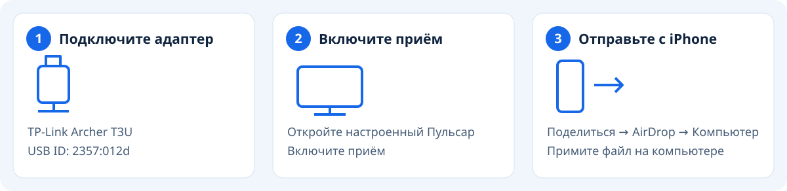
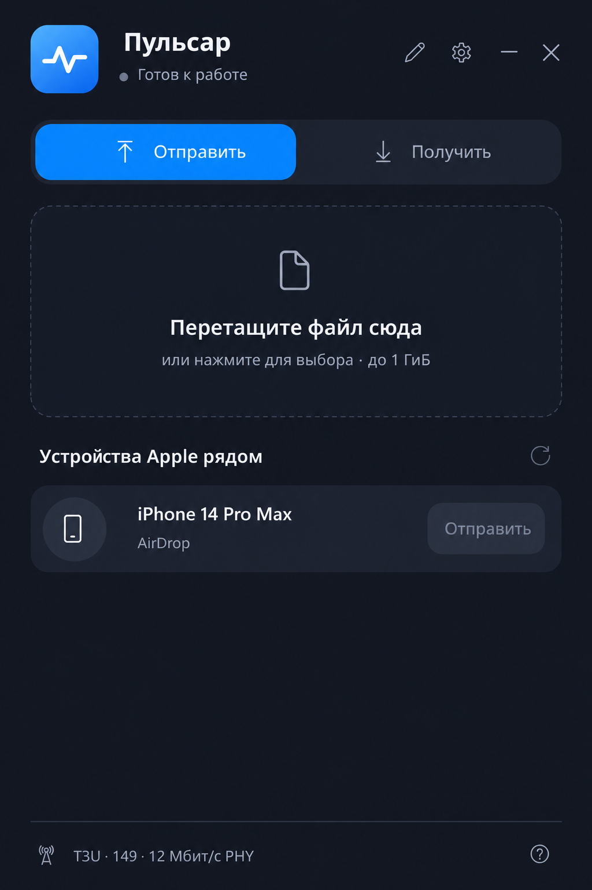
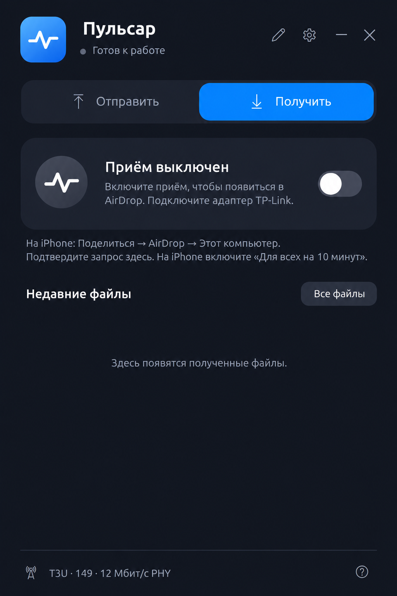

Тестовая версия · нужен поддерживаемый USB-адаптер.
Требуются TP-Link Archer T3U с USB ID 2357:012d, Windows x64, работающий Bluetooth и первоначальная настройка с правами администратора. Одного встроенного Wi-Fi недостаточно. Настройка выделенного адаптера отключает его обычный режим Wi-Fi.
Подготовка
Подключите поддерживаемый адаптер. Если он не настроен, закройте Пульсар, выберите «Настроить USB-адаптер» в меню «Пуск» и подтвердите запрос администратора. Сохраните другой доступ к интернету. Откройте Пульсар и включите приём.

С iPhone на компьютер
- Откройте фотографию, видео или файл на iPhone.
- Выберите Поделиться → AirDrop → Этот компьютер или заданное имя компьютера.
- Нажмите «Принять» на компьютере, дождитесь завершения и откройте «Полученные файлы».
С компьютера на iPhone
- Разблокируйте iPhone и включите AirDrop «Для всех на 10 минут».
- Откройте вкладку «Отправить» в Пульсар и обновите список устройств.
- Выберите файл и нажмите «Отправить» рядом с iPhone.
- Подтвердите на iPhone и дождитесь завершения.
Если устройство не появилось
Держите устройства рядом. Разблокируйте iPhone, обновите режим «Для всех на 10 минут», заново откройте AirDrop и обновите список в Пульсар. Проверьте, что приём включён и адаптер подключён.
Восстановление Bluetooth может ненадолго отключить аксессуары. При отказе самого Bluetooth может потребоваться перезапуск Windows. При первоначальной проверке оставьте экспериментальную скорость и подбор канала выключенными.
Отправка

Вымышленные демонстрационные данные
Получение

Вымышленные демонстрационные данные
Ограничения
- Размер файла — до 1 ГиБ. Большое видео может передаваться несколько минут с паузами. Не блокируйте телефон и не останавливайте приём.
- «Только для контактов» не поддерживается. Проверяйте нужное устройство самостоятельно.
- Сборка не подписана. Аппаратные проверки текущей версии, длительная совместная работа Bluetooth и установка на чистом ПК требуют отдельных испытаний.
- Чтобы вернуть обычный Wi-Fi адаптера, закройте Пульсар и выберите «Восстановить драйвер Wi-Fi» в меню «Пуск».
- Диагностика может содержать личные имена, адреса и пути. Просмотрите и обезличьте архив перед передачей.